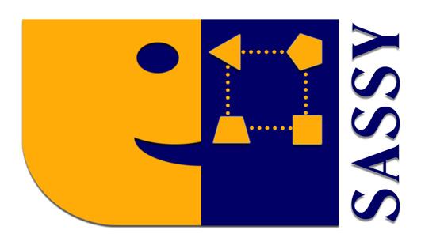
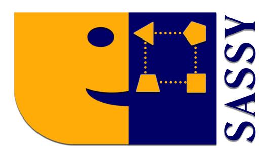

Summer School on Natural Language Generation, Summarisation, and Dialogue Systems
20th - 24th July 2015
The objective of this summer school is to introduce participants to the concepts and research questions in natural language generation (NLG), summarisation and dialogue systems. Although these three areas produce natural language, their distinct communities seldom interact because each community relies on different methods and because the inputs to each kind of system are different. There is, however, considerable overlap in the kinds of problems that need to be considered, from selecting the right content to evaluating the systems. We believe that focusing on the similarities of the different areas can stimulate "cross-pollination" of research. For example, most summarisation techniques could benefit from deeper semantic processing as performed in dialogue systems. Similarly, many NLG systems could benefit from techniques used by dialogue systems to substantially improve the generated output.
The summer school will be primarily aimed at PhD students and early career researchers but more experienced will be admitted to the extent that space permits. Registration will be closed sooner than was advertised as there are only limited places available.
Summer School Time Table
| Time | Monday | Tuesday | Wednesday | Thursday | Friday |
|---|---|---|---|---|---|
| 9:00-10:30 | Intro to NLG Ehud Reiter |
Learning to Generate Yannis Konstas |
Intro to Summarisation Advaith Siddharthan |
System Evaluation Ehud Reiter |
Cognitive Modelling Kees van Deemter |
| 10:30-10:45 | break | break | break | break | break |
| 10:45-12:15 | NLG in Detail (Content Determination) Gerard Casamayor |
Intro to Dialogue Systems Paul Piwek |
Intro to Summarisation Advaith Siddharthan |
Readability Thomas François |
The New Science of Information Delivery Robert Dale |
| 12:15:13:00 | lunch | lunch | lunch | lunch | lunch |
| 13:00-14:30 | NLG in Detail (Micro Planning) Albert Gatt |
Intro to Dialogue Systems Paul Piwek |
NLG in Practice Yaji Sripada |
Readability Thomas François |
Poster/Demo Session |
| 14:30-14:45 | break | break | break | break | break |
| 14:45-16:15 | NLG in Detail (Surface Realisation) Albert Gatt |
Open Lab Yaji Sripada |
Open Lab Yaji Sripada |
Open Lab Yaji Sripada |
Discussion |
| 16:15-16:30 | break | end | |||
| 16:30-18:00 | Open Lab Yaji Sripada |
||||
| 18:00-18:30 | Social Event | break | break | Evening off | |
| 18:30-19:30 | Evening Lecture Paul Piwek |
Evening Lecture Graeme Ritchie |
Course Summary
-
Introduction to NLG:
Ehud Reiter (University of Aberdeen, ARRIA NLG)
slides
The basic concepts of NLG will be introduced, including document planning, microplanning, and realisation. Also examples of real NLG systems will be presented, including both what they do and how they work.
I will also present and discuss some real-world NLG systems. I will then introduce the basic concepts of NLG, including document planning, microplanning, and realisation. I will also briefly discuss system-building issues such as knowledge acquisition and evaluation. I will conclude with a quick summary of commercial NLG activity.
-
NLG in detail
-
Content Determination:
Gerard Casamayor (Universitat Pompeu Fabra)
slides
This talk will summarise existing approaches to content determination for NLG, as well as touching on the closely related topics of text ordering and structuring. It will discuss why content determination is hard and what sorts of (hand-crafted or learned) models can be used to inform it. It is often useful to regard content determination as a search problem, and we will take this approach in order to compare the different methods that have been used.
-
Micro-planning:
Albert Gatt (University of Malta)
slides
This session will be devoted to discussing different micro-planning tasks. In particular, we will review some of the “classic” sub-tasks that microplanners have often been designed to perform, notably:
- lexicalisation, the task of choosing the right words or lemmas to express the contents of the message;
- aggregation, the task of merging distinct representations into a single, more concise representation;
- referring expression generation, the task of selecting the content (and, to some extent, the form) of referential noun phrases in text.
Following a brief discussion of these “classic” sub-tasks, the session will then move on to a relatively under-studied problem in microplanning, which arises when the text being generated has “narrative” qualities — that is, it recounts events which, in addition to being related to each other in the generated discourse, are also related to each other in time. In this case, new questions arise in relation to choices the microplanner has to make, notably where tense, aspect and temporal connectives are concerned.
For the purposes of illustration, the discussion of these microplanning sub-tasks will be conducted with reference to a concrete family of NLG systems, developed in the BabyTalk Project (Portet et al, 2009; Gatt et al, 2009; Hunter et al, 2011, 2012). However, reference will also be made to recent statistical approaches to NLG, in particular, the use of machine-learning methods to learn models from data that provide the kernel to the solutions of these sub-tasks.
-
Surface Realisation:
Albert Gatt (University of Malta)
slides
In this session, we will first discuss the domain of realisation with reference to a number of different languages. The purpose of this is mainly to delineate the problem: different languages will make different demands on a realiser, and in some cases, syntactic choices will have repercussions for microplanning decisions.
Next, we will look at an overview of different realisers, starting with some classic rule-based examples, such as RealPro and KPML (Bateman, 1997). These will be contrasted with recent approaches, such as HALOGEN (Langkilde-Geary and Knight, 2002) or OpenCCG (White et al, 2007), where the aim is to minimise the rule-based component while allowing syntactic choices to be made probabilistically, usually through the use of n-gram based language models. In each of these cases — whether rule-based or statistical — there are assumptions made about the nature of the input, usually motivated by some theory of syntax.
Finally, we will distinguish realisers such as the above from “realisation engines”, which simply provide the tools to perform morphosyntactic realisation in a given language, without any commitment as to the nature of the input representation. As a specific case study, we will use SimpleNLG (Gatt and Reiter, 2009).
-
Content Determination:
Gerard Casamayor (Universitat Pompeu Fabra)
slides
-
Introduction to Summarisation:
Advaith Siddharthan (University of Aberdeen)
(Slides in preparation)
This tutorial will cover a range of text summarisation approaches described in the literature for extractive and abstractive summarisation, including models for sentence selection in extractive summarisation based on various statistical definitions of "topic", abstractive summarisation through aggregation and deletion, attempts at microplanning (e.g., generating referring expressions), the use of template based generation, and issues of text planning or sentence ordering.
-
Introduction to Dialogue Systems:
Paul Piwek (Open University)
slides,
additional materials
The aim of this tutorial is to provide an overview of the key ideas at the heart of most dialogue systems and to describe some active research topics in this area. In order to get a systematic understanding of a range of dialogue systems, we use the notion of a dialogue game. Several systems are described in terms of the dialogue game that they play. This allows us to compare and contrast these systems and distinguish four broad categories: reactive, fixed-task, selected-task and joint-task dialogue systems. The tutorial includes a discussion of dialogue system evaluation and the use of machine learning to improve dialogue system performance. We conclude by considering two current research topics: non-cooperation and incrementality.
-
Learning to generate: Concept-to-text generation using machine learning
Yannis Konstas (University of Edinburgh)
slides
The explosion of the world wide web in the recent years has generated data that are both in very large amounts, as well is in obscure or inaccessible formats to non-expert users (e.g., numeric, tabular forms, graphs, etc). Several successful generation systems have been produced in the past twenty years, that mostly rely on human-crafted rules or expert-driven grammars. While reliable and capable of generating high-quality output, such systems are usually difficult to exploit patterns in very large sets of data, as well as port to different domains, without significant human intervention.
In this tutorial, we will explore systems in NLG that learn the well-known pipeline modules of content selection, microplanning and surface realisation, automatically from data. We will visit methods that model each step into a probabilistic model or other weighted function, and learn their parameters by optimising a text output-related objective metric (e.g., BLEU, METEOR scores). Generation is then viewed as a common search problem, which entails finding the best combination of parameters given the trained model and an input. We will also compare systems that optimise each module in isolation, as well as jointly.
-
Evaluation:
Ehud Reiter (University of Aberdeen, ARRIA NLG)
slides
Different ways to evaluate NLG systems will be discussed, including task-based, human-based, and metric-based; what can we learn from these different types of evaluation? We will also summarise practice in each of these types of evaluations, and present the design and outcomes of several real NLG evaluations.
-
Readability:
Thomas François (Université catholique de Louvain)
slides
The field of readability aims at automatically assessing the difficulty of texts for a given population. A readability model uses some of the linguistic characteristics of the texts and combines them with a statistical algorithm, traditionally linear regression. The first attempts date back to the 1920's and the field has since seen the development of famous formula such as Flesch's (1948) or Gunning's (1952). They have been widely used in the anglo-saxon world, for instance to control the difficulty of articles in mainstream newspapers. However, the limitations of readability models have been stressed as early as the end of the 70's (Kintsch and Vipond, 1979). Selzer (1981) even published a critical paper entitled “Readability is a four-letter word”. This eventually led to the investigation of new research avenues, relying on computational linguistics as well as machine learning techniques to improve traditional approaches (Collins-Thompson and Callan, 2005 ; Schwarm and Ostendorf, 2005). In spite of these recent advances, readability remains a challenging field that offers large room for improvement as well as a lot of opportunities for real applications.
In this readability module, we will first outline the main tendencies in the field, with a focus on recent work that applies NLP techniques to readability. We will also describe the usual methodology framework applied to design a readability model and discuss some of the choices available within this framework. A summary of the evaluation techniques used in the field will end the first part of the module. In the second part, we will discuss some of the main challenges and issues in the field as we see them, such as the challenge of collecting large datasets of difficulty-annotated texts to train modern statistical algorithms, the issue of cross-domain generalisation, or the adaptation of readability methods to lower levels (sentence or word). This module will be concluded with some perspectives for future research in the field.
-
Cognitive Modelling: the case of reference
Kees van Deemter (University of Aberdeen)
slides
- Goals of NLG.
In this section we shall review how the goals of NLG are usually understood. Based on psycholinguistic experiments I will argue that the goal of producing useful output should be distinguished from the goal of simulating speakers. The question will emerge of whether anyone has a coherent view of the aims of NLG yet. - Goals of Computational Cognitive Modelling.
In this section I will give an overview of the aims of Computational Cognitive Modelling (CCM) and the types of CCMs that have been developed so far. - Brief recap of Referring Expressions Generation (REG).
This is a brief recap of REG, reiterating some items from Albert Gatts course on Microplanning, then describing how REG algorithms are usually evaluated. We shall see that most evaluation studies focus on the ability of an REG model to simulate the utterances in a corpus. - REG as Cognitive Modelling: Examples.
In this part of the lecture, I will give examples of REG studies that bear a greater resemblance to the bulk of work in CCM. Specifically, we shall look at algorithmic predictions concerning processing time (i.e., speech onset latencies) and, if time allows, predictions concerning the probability distribution of the different types of Referring Expressions that can be produced in a given situation. - REG as Cognitive Modelling: Classification.
In light of what we have seen, we shall apply some existing classifications of CCMs (e.g. from R.Sun’s Cambridge Handbook of Computational Psychology) to REG. It will emerge that many REG studies can be seen as CCM product models. - Implications for NLG as a whole.
Finally, we shall return to NLG as a whole, asking whether REG is somehow special. Tentatively, I will argue that all of NLG *can* be seen as an exercise in Computational Cognitive Modelling, though a more utilitarian view (which emphasises the generation of useful referring expressions) is valid as well.
- Goals of NLG.
-
The New Science of Information Delivery:
Robert Dale (ARRIA NLG)
slides
Natural Language Generation is a means to an end. That end is the delivery of information, and the great thing about NLG is that it provides a way of automating the delivery of the right information to the right people at the right time in the right way. But to really do that well, we need to understand the task of information delivery, and we need to understand how a variety of scientific disciplines provide underpinnings for how we can do that task well. This talk aims to stand back and look at the bigger picture: what it would mean to have a science of information delivery, with NLG as a key player along with a number of other technologies.
Open Lab
Yaji Sripada (University of Aberdeen, ARRIA NLG)
The Open Lab sessions are your opportunity to test your learning at the summer school. You will build an NLG system end-to-end using the software modules we provide. You can work alone or as a team. The idea is not to push you into writing code round-the-clock to build loads of functionality. Instead you will be encouraged to focus on learning first-hand the design choices and trade-offs involved in building an NLG application. If you are new to computer programming but willing to learn, help will be available in these supervised lab sessions to get you started with your first program!
Poster/Demo Sesson
At this session the participants can showcase the applications that they have developed in the open lab sessions and receive feedback from the lecturers and other participants. Also, there is an opportunity for all the participants to bring along a poster of the work they are currently involved in. It will be a good networking event for all of us.
Evening lectures
-
Graeme Ritchie (University of Aberdeen)
Creative Language Generation
(Talk cancelled)
Over the past two decades, the field of computational creativity has come into being, and grown considerably. Its aim is "to model, simulate or replicate creativity using a computer". To this end, most of the work focusses on building software which engages in activities commonly thought, within society, to be creative, such as visual art, concept generation, musical composition, etc. Many of these domains involve natural language (e.g. poetry, stories, jokes), and hence such work can be seen as a subarea, creative language generation. This talk will give a general introduction to the field of computational creativity, briefly review some of the language-based work, and discuss some of the methodological issues raised by such research.
-
Paul Piwek (Open University)
Towards machines that mean what they say
slides
In this talk, I will examine what it involves for a speaker to mean what they say. Traditional well-established accounts of meaning focus on (1) the speaker grasping the truth conditions of what they say and (2) having the right intentions. I will discuss some limitations of this view and then proceed to outline an alternative approach which is inspired by the work of the American philosopher Robert Brandom. The proposal shifts the focus from the individual speaker and their intentions to the language games that speakers engage in with other language users. I will describe first steps towards formalising such theory of meaning and the prospects of using this work to develop machines that mean what they say.
Sponsors
 
